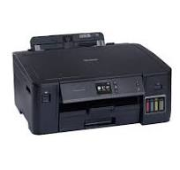

Biodata Diri
Nama: Abdul Fikri Husaini
NIM: 607012400104
Kelas: D3SI 48-03
Nama Mata Kuliah
Jaringan Komputer
Pembahasan Perangkat Jaringan Komputer
- Nama Perangkat: Printer
- Gambar: 
-
Mencetak Dokumen Kerja
Printer digunakan untuk mencetak dokumen seperti laporan, proposal, atau surat. Di kantor, printer memastikan dokumen penting tersedia dalam bentuk cetak.
-
Mencetak Foto
Printer juga bisa digunakan untuk mencetak foto dengan hasil yang tidak kalah berkualitas dengan studio.
-
Mencetak Tanda Terima atau Faktur
Dalam dunia bisnis, printer berfungsi untuk mencetak tanda terima, faktur, atau bukti transaksi lainnya.
Fungsi:
Jenis atau Macam-macam Printer
-
Inkjet Printer:
Jenis printer yang paling umum digunakan di rumah dan di kantor kecil. Printer ini bekerja dengan menyemprotkan tinta ke kerta melalui nozzle yang sangat kecil. Jenis printer ini umum digunakan karena kemampuannya mencetak gambar dan foto dengan kualitas tinggi, serta fleksibilitasnya dalam mencetak pada berbagai jenis kertas, termasuk kertas foto dan kertas khusus lainnya.
-
Laser Printer:
Laser printer bekerja dengan menggunakan sinar laser untuk mengikat toner (serbuk tinta) ke kertas. Printer ini lebih cepat dan efisien dalam mencetak dokumen teks dalam jumlah besar daripada printer inkjet. Oleh karena itu, kantor-kantor besar biasanya memilih menggunakan printer jenis ini.
-
Dot Matrix Printer:
Dot matrix printer adalah jenis printer yang bekerja dengan memukul pita tinta ke kertas untuk membentuk karakter atau gambar dalam bentuk titik-titik kecil. Meskipun teknologi ini sudah agak usang, printer dot matrix masih digunakan di beberapa industri karena kemampuannya mencetak pada kertas rangkap dan kertas berukuran besar.
-
Thermal Printer:
Thermal printer menggunakan panas untuk mencetak pada kertas khusus yang sensitif terhadap panas. Jenis printer ini sering digunakan dalam mesin kasir dan alat-alat point of sale (POS) untuk mencetak tanda terima atau label. Keuntungan utama dari thermal printer adalah kecepatan cetak yang tinggi dan rendahnya biaya operasional, karena tidak memerlukan tinta atau toner.
-
3D Printer:
3D printer adalah jenis printer yang digunakan untuk mencetak objek tiga dimensi dari berbagai bahan seperti plastik, logam, atau resin. Printer ini bekerja dengan menambahkan lapisan demi lapisan material hingga terbentuk objek yang diinginkan. 3D printer banyak digunakan dalam industri manufaktur, arsitektur, dan desain produk, serta semakin populer di kalangan hobiis dan penggiat DIY (Do It Yourself).
Sumber
Lampiran File Tutorial
File langkah-langkah membuat web hosting dapat dilihat melalui tautan ini: Klik di sini